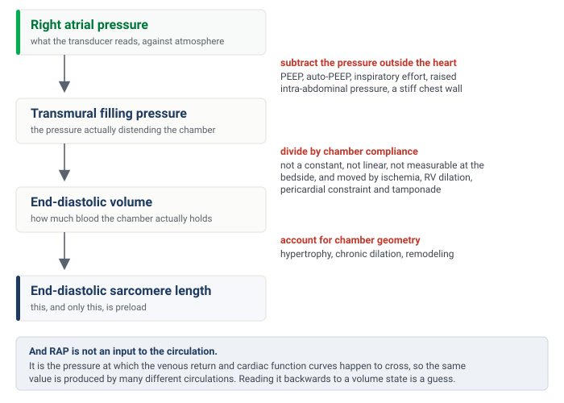
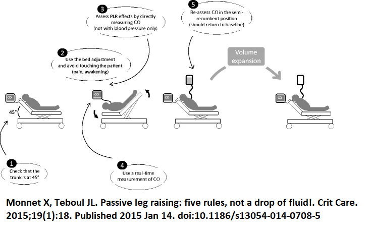
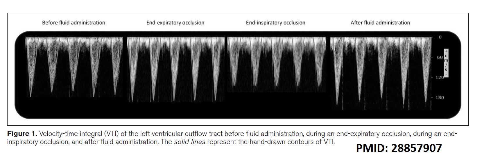

Module I11
Hemodynamic monitoring tools
The Novice pathway closed with a method: assess, hypothesize, test. This module is about the third word. Every tool assembled here answers one of exactly two questions, and confusing them is the commonest error made with them at the bedside.
The first question is predictive. If I raise this patient's preload, will flow increase? The second is diagnostic. Is the flow this patient already has sufficient for the tissues? Tests of preload responsiveness answer the first and are silent on the second. Markers of perfusion answer the second and are silent on the first. A patient can be preload responsive with an entirely normal microcirculation, in which case a bolus buys a higher cardiac output that nobody needed and leaves the volume behind. A patient can have a wide venous-to-arterial carbon dioxide gap and be completely unresponsive to volume, in which case fluid is not the answer at any dose. These tools become a method only when you decide which question you are asking before you reach for one.
That discipline has a corollary that runs through the whole module. A monitoring number is worth what its assumptions are worth. Most of the work below is not learning the thresholds, which are few and easy, but learning the conditions under which each threshold means anything at all.
Why RAP is not a measure of preload
Start with the number that is measured most often and understood least well. Preload, in the sense the Frank-Starling relationship uses it, is the length of the sarcomere at end diastole. It is a length. What sits on the monitor is a right atrial pressure, and the distance between those two quantities is not a technicality. It is three separate conversions, each of which fails in a critically ill patient.

The first conversion is from the pressure the transducer reads to the pressure that actually distends the chamber. The transducer is referenced to atmosphere, but a heart sits inside a chest, and what stretches its walls is the difference between the pressure inside the chamber and the pressure around it. Add PEEP, or air trapping, or a strong inspiratory effort, or a tense abdomen pushing the diaphragm up, and the measured RAP rises while the transmural pressure may not move at all. This is the same transmural argument that decides when arterial waveform variation is trustworthy (Module I12 (opens in a new tab)).
The second conversion is from a distending pressure to a volume, which requires the compliance of the chamber. Compliance is not a constant, it is not linear, it differs between patients, and it moves during the illness you are treating. Ischemia stiffens the ventricle. A dilating right ventricle presses on the left through the septum. A pericardium that has stopped being compliant, whether from tamponade or constriction, converts almost any volume change into a large pressure change. There is no bedside measurement that supplies this number, so the conversion is always an assumption.
The third problem is the deepest, and it is not a conversion at all. RAP is not something the circulation is given. It is the pressure at which the venous return relationship and the cardiac function relationship happen to intersect, which the previous modules built in detail. Because it is an output of that intersection, the same RAP of 10 mmHg is produced by a full reservoir feeding a failing ventricle, by a normal reservoir feeding a normal ventricle under PEEP, and by a depleted reservoir feeding a ventricle that cannot empty. Reading a single value backwards to a volume state means solving one equation with two unknowns.
The literature says exactly what the physiology predicts. A 2013 meta-analysis of 43 studies found that central venous pressure discriminated fluid responders from non-responders with an area under the receiver operating characteristic curve of 0.56, and that the correlation between the pressure and the change in cardiac performance was 0.18. A systematic review that went back to 1148 individual patient records reached the same place from the other direction: no specific value between 0 and 20 mmHg carried a predictive value above 66 percent, and responders and non-responders alike clustered in the intermediate 8 to 12 mmHg range. The pooled analysis of dynamic indices that established the pulse pressure variation threshold reported a central venous pressure area under the curve of 0.55 in the same breath. Three different methods, one answer.
The waveform, as opposed to the mean value, carries a further layer of information about the atrium and the tricuspid valve (Module I14 (opens in a new tab)).
Fluid responsiveness is a prediction, not a diagnosis
If a static pressure cannot say where a patient sits on the cardiac function curve, the alternative is to perturb the circulation and watch what flow does. That is the whole logic of dynamic testing. Every test below transiently increases or decreases venous return by some means and then asks whether cardiac output followed.
Three distinctions have to be held apart before any of them is interpretable. First, fluid responsive is not the same as being hypovolemic. Responsiveness means the heart is operating on the ascending limb of the Frank-Starling relationship, which is where roughly half of healthy people are sitting right now. It is a statement about the shape of the curve, not about the volume of the reservoir. Second, fluid responsive is not the same as needing fluid. A positive test predicts that flow will increase. Whether flow should increase is a separate judgment that must come from a perfusion signal. Third, fluid responsive is not the same as fluid tolerant. A patient may raise cardiac output with a bolus and simultaneously worsen gas exchange, raise filling pressures, and push congestion into the kidney and liver. The test predicts the benefit and says nothing about the cost.
The second procedural rule is more concrete and is broken constantly. The response must be measured as flow, not as pressure. Arterial pressure depends on stroke volume and on the elastance of the arterial tree, so a change in pressure conflates the thing you are testing with vascular tone that may be moving for its own reasons. The size of the penalty is known. In the meta-analysis of the passive leg raise, judging the test by cardiac output gave a pooled sensitivity of 0.85 and specificity of 0.91, whereas judging the same maneuver by pulse pressure dropped sensitivity to 0.56. The original 2006 study found the same gap, with a sensitivity of 97 percent for aortic blood flow against 60 percent for pulse pressure. Acceptable flow surrogates are the velocity-time integral at the left ventricular outflow tract, arterial pulse contour stroke volume, thermodilution, and in selected circumstances end-tidal carbon dioxide as a proxy for pulmonary blood flow.
The passive leg raise
The passive leg raise is the most broadly applicable test in the set because it borrows the patient's own blood. Tipping the trunk down and the legs up transfers roughly 300 mL of venous blood from the legs and the splanchnic bed toward the right heart, which is a preload challenge of about the size of a small bolus. Nothing is infused, and the effect reverses when the patient is returned to position.

Each of the five rules corrects a specific failure. Start semi-recumbent at 45 degrees rather than supine, because the trunk-down component recruits splanchnic blood as well as leg blood and materially increases the size of the challenge. Move the patient with the bed controls, not by hand, because pain, coughing or waking a sedated patient produces an adrenergic response that raises cardiac output for reasons that have nothing to do with preload. Measure cardiac output directly, for the reason given above. Use a monitor that responds in real time, because the effect can dissipate within a minute, so a technique that averages over several minutes will miss it. Return the patient and confirm that the value falls back to baseline, which is what distinguishes a genuine preload effect from spontaneous drift.
Performed that way, and read as a rise in cardiac output of 10 percent or more, the pooled sensitivity is 0.85 and specificity 0.91 across 21 studies and 991 patients, with an area under the curve of 0.95. The maneuver remains valid in the situations that disable the ventilator-based tests, which is its principal advantage: spontaneous breathing, cardiac arrhythmia, low tidal volume ventilation and low respiratory system compliance are all compatible with it. Its real constraint is logistic. It requires a monitor that can detect a transient change in flow, and it requires a bed and a patient position you can actually manipulate. Intra-abdominal hypertension is frequently listed as a cause of false negatives on the reasoning that a tense abdomen obstructs the transfer, but the authors of the technique note that this has been asserted more often than it has been demonstrated, and the single study addressing it did not measure intra-abdominal pressure during the maneuver itself.
Pulse pressure and systolic pressure variation: the tool, and when it lies
During passive positive pressure ventilation, each mechanical breath is a standardized cardiovascular provocation. Inspiration raises pleural pressure, which reduces the gradient for venous return and loads the right ventricle, and two or three beats later that reduced right ventricular output arrives at the left ventricle as a fall in stroke volume. When the ventricles are preload dependent, that cyclic modulation is large. When they are on the flat part of the curve, it is small. Pulse pressure variation is simply the amplitude of the resulting swing in arterial pulse pressure across one respiratory cycle, expressed against its own mean.
Systolic pressure variation is the same idea applied to the systolic pressure and can be split into a component above and a component below the apnoeic baseline, which carries additional information. This module treats both as instruments, and what matters here is the threshold and the preconditions. The mechanism is developed in Module I12 (opens in a new tab) and both indices are treated in full in Module I13 (opens in a new tab).
The threshold is stable across the literature. The original study in 40 septic patients with circulatory failure found that a variation of 13 percent separated responders from non-responders with a sensitivity of 94 percent and specificity of 96 percent. A pooled analysis of 29 studies and 685 patients later put the mean threshold at 12.5 percent (S.D. +/- 1.6 percent), sensitivity 0.89, specificity 0.88, and an area under the curve of 0.94. Those two numbers are the same number.
A single cutoff, however, misrepresents how the index behaves. In 413 patients, values between 9 and 13 percent formed a grey zone in which the test did not usefully classify, and roughly a quarter of patients fell inside it. A pulse pressure variation of 11 percent is not a negative test. It is an uninformative one, and the correct response is to reach for a different test rather than to round it in the direction you were already leaning.
Stroke volume variation is the third member of the family and the one most often displayed by a pulse contour monitor. The computation is identical, but the quantity that varies is the stroke volume itself, and that quantity is not measured. It is inferred, beat by beat, from the shape of the arterial pressure wave through a model of the arterial tree whose compliance the monitor either calibrates against a reference cardiac output or assumes from demographic data. Pulse pressure is read directly from the transducer. Stroke volume passes through that model first, and so does its variation, which is worth remembering when vascular tone is being changed by a vasopressor while the number is being read. In the same pooled analysis of 29 studies, stroke volume variation performed a little below pulse pressure variation: a mean threshold of 11.6 percent (S.D. +/- 1.9 percent), an area under the curve of 0.84 against 0.94, and a sensitivity and specificity of 0.82 and 0.86. The difference is small. The list of preconditions is not, and every entry in the table below applies to stroke volume variation unchanged, because the respiratory modulation it reads is the same one.
The preconditions matter even more, because when they are violated the number does not become noisy, it becomes wrong in a predictable direction.
| Condition | The number | What goes wrong without it |
|---|---|---|
| Controlled ventilation, no spontaneous effort | No triggered breaths | Patient effort produces pleural pressure swings of uncontrolled size and timing, so the provocation is no longer standardized |
| Regular rhythm | Sinus, any rate | Beat-to-beat variation in filling from the arrhythmia is indistinguishable from respiratory variation |
| Tidal volume | ≥ 8 mL/kg predicted body weight | The pleural pressure swing is too small to unmask preload dependence. Predictive accuracy fell from 88 to 51 percent below this volume |
| Heart rate to respiratory rate ratio | ≥ 3.6 | Too few beats per respiratory cycle to resolve the swing. Variation becomes negligible below this ratio |
| Respiratory system compliance | ≥ 30 mL/cmH2O | Airway pressure is not transmitted to the pleural space. In low compliance the area under the curve fell to 0.69, against 0.94 for the leg raise and 0.93 for end-expiratory occlusion |
| Right ventricular function | Tricuspid annular peak systolic velocity ≥ 0.15 m/s | A failing right ventricle already varies its output with the breath because of afterload, producing a high value in a patient who will not respond to volume |
The practical consequence is not a footnote. A multicenter point-prevalence study screened 311 critically ill patients against those six criteria. Six patients, two percent of the cohort, satisfied all of them. Among the 170 who had an arterial line, five qualified. Pulse pressure variation is an excellent test for the patient it was validated in, and that patient is uncommon in a modern intensive care unit where tidal volumes are small, sedation is light and rhythms are irregular. This is precisely why the rest of the toolkit exists.
The occlusion tests
If the problem is that each breath is too small a provocation to interpret, one solution is to remove the breaths altogether for long enough to see the effect. An end-expiratory occlusion holds the ventilator at end expiration for 15 seconds. During that hold the cyclic inspiratory impediment to venous return is abolished, so venous return and therefore cardiac preload increase for the duration. A preload-dependent patient converts that into a measurable rise in cardiac output. A patient on the flat part of the curve does not.
In the original study of 34 ventilated patients in shock, a rise in cardiac index of 5 percent or more during the hold predicted a response to 500 mL of saline with a sensitivity of 91 percent and a specificity of 100 percent. The threshold is small because the provocation is small, which creates its own difficulty: 5 percent is at or below the reproducibility of an echocardiographic velocity-time integral, so this version of the test belongs to a continuous flow monitor rather than to a hand-traced Doppler envelope.

The elegant fix is to run the maneuver at both ends of the respiratory cycle. An end-inspiratory occlusion holds lung volume at its peak, which maximizes the impediment to venous return and moves flow in the opposite direction. Adding the two changes together doubles the signal. In 30 ventilated patients, a 15 second end-expiratory occlusion and a 15 second end-inspiratory occlusion separated by one minute produced a combined change in velocity-time integral of 23 percent in responders against 8 percent in non-responders, and a threshold of 13 percent gave both a sensitivity and a specificity of 93 percent.
Both versions require a patient who will tolerate a 15 second hold without triggering the ventilator, which is the one precondition the occlusion tests cannot escape. They do not require a large tidal volume, they do not require normal respiratory system compliance, and they are considerably more forgiving of an irregular rhythm than pulse pressure variation, because the measurement is a change in mean flow across a window rather than a beat-to-beat amplitude.
A third variant works from the other direction. The tidal volume challenge accepts that the patient is being ventilated at 6 mL/kg where pulse pressure variation is uninterpretable, raises the tidal volume to 8 mL/kg for one minute, and reads the change in the index rather than its absolute value. In the original description, an absolute increase in pulse pressure variation of 3.5 percent, or in stroke volume variation of 2.5 percent, identified responders with areas under the curve of 0.99 and 0.97 across 30 measurements in 20 patients. It converts a broken test into a working one at the price of one minute of larger breaths.
The fluid challenge, done as a test
Sometimes none of the indirect provocations is available, and sometimes the clinical answer is going to be fluid regardless. The fluid challenge then becomes the reference method, with the acknowledged disadvantage that it is the only test in this module that leaves volume behind if it is negative.
Done as a test rather than as a gesture, it has four elements. A defined volume, because too little fails to shift the venous return relationship far enough to register and too much is simply treatment. A quasi-randomized comparison of 1, 2, 3 and 4 mL/kg in 80 patients found that the proportion identified as responders rose from 20 percent at the smallest dose to 65 percent at 4 mL/kg, which is now the commonly recommended dose. A defined speed, over 5 to 10 minutes, short enough that nothing else about the patient changes during the test. A defined endpoint measured as flow, with an increase in cardiac output of at least 10 percent counted as positive. And a filling pressure watched alongside the flow, so that a rise in RAP with no rise in cardiac output stops the infusion immediately rather than after the fourth repetition.
That last element also solves the interpretive problem in the other direction. If cardiac output does not rise and RAP does not rise either, the challenge may simply have been too small to test anything. Magder's group handled this by counting a volume infusion as an adequate test of the Starling mechanism only when it raised the central venous pressure, measured at end expiration, by at least 2 mmHg. A negative fluid challenge that never moved the filling pressure has not demonstrated non-responsiveness. It has demonstrated an inadequate challenge.
A smaller version exists for patients in whom even 4 mL/kg is unwelcome. The mini-fluid challenge infuses 100 mL of colloid over one minute and reads the velocity-time integral, where a rise of 10 percent or more predicted responsiveness with a sensitivity of 95 percent and a specificity of 78 percent in 39 patients. The lower specificity is the expected cost of a smaller provocation read against the same measurement noise.
Choosing among them
The tests are not ranked. Each is best in the patient whose physiology satisfies its assumptions, so selection is the skill, not memorization of thresholds.
| Test and threshold | Spontaneously breathing | Passive, regular rhythm, VT ≥ 8 mL/kg | Passive with arrhythmia | ARDS or low compliance |
|---|---|---|---|---|
| Passive leg raise, ≥ 10 % rise in flow | Yes | Yes | Yes | Yes |
| PPV > 12.5 % or SVV > 11.6 % | No | Yes | No | No |
| End-expiratory occlusion, ≥ 5 % rise | No | Yes | Yes | Yes |
| Combined EEO and EIO by VTI, ≥ 13 % | No | Yes | Yes | Yes |
| Tidal volume challenge, ΔPPV ≥ 3.5 % | No | Not needed | No | Yes |
| Fluid or mini-fluid challenge, ≥ 10 % rise | Yes | Yes | Yes | Yes, with caution |
Two entries deserve a note. The occlusion tests survive an irregular rhythm because they compare mean flow across a 15 second window rather than the amplitude of a beat-to-beat swing, though the flow measurement itself becomes noisier and averaging over more beats is prudent. The tidal volume challenge fails in arrhythmia for the opposite reason, since the quantity being read is still pulse pressure variation.
Respiratory variation in inferior vena cava diameter belongs in the same conversation and carries the same caveats as pulse pressure variation, because it is driven by the same pleural pressure swing. Under passive ventilation, a distensibility index of 18 percent or more identified responders with a sensitivity and specificity of 90 percent in a study of 23 septic patients. In a spontaneously breathing patient the vessel collapses for reasons that have nothing to do with volume responsiveness, and the measurement then reports something closer to a static estimate of RAP, with all the limitations established at the top of this module.
Perfusion markers: what each one is actually measuring
The Novice pathway introduced capillary refill time, mottling, lactate, central venous oxygen saturation and the venous-to-arterial carbon dioxide gap, and established that they are read together rather than singly. The Core question is narrower and harder. For each one, what exactly is the quantity being measured, and what makes it invalid?
Central venous oxygen saturation
Central venous oxygen saturation is not a measure of oxygenation and not a measure of cardiac output. Rearranging the Fick relationship, the flow and hemoglobin terms cancel, and what survives is the fraction of delivered oxygen that the tissues did not take. It is one minus the oxygen extraction ratio, which is why a normal value sits near 70 to 75 percent, corresponding to the roughly quarter of delivered oxygen that resting tissues consume.
Three qualifications follow directly. First, it is a central saturation, drawn from a catheter in the superior vena cava, so it reports the extraction behavior of the drainage territory above the diaphragm and not of the splanchnic bed, which is usually where the trouble is. It is not interchangeable with the mixed venous saturation from the pulmonary artery, which includes coronary sinus and lower body return. Second, a low value is informative in a specific way: it means extraction has been forced up to defend consumption against inadequate delivery, which identifies a flow-limited state that should improve with more output. Third, and the point that changes management, a normal or high value does not exclude shock. When capillary flow is heterogeneous, blood traverses shunted units without unloading oxygen and returns fully saturated from tissue that is starving. Oxygen is being delivered and not used, and increasing delivery further will not fix that.
The venous-to-arterial carbon dioxide gap
The Pv-aCO2 gap answers the question central venous saturation cannot, because it is a marker of flow rather than of oxygenation. Tissues produce carbon dioxide continuously, and blood carries it away. If flow slows, carbon dioxide accumulates in the venous effluent, and the difference between the venous and arterial partial pressures widens. A gap of 6 mmHg or less is normal.
The value of measuring it alongside central venous saturation is best shown by the study that did exactly that. In 50 patients with septic shock, all of whom had already achieved a central venous saturation above 70 percent, those with a gap above 6 mmHg had a cardiac index of 2.7 L/min/m2 against 4.3 in those below, and cleared lactate and improved their organ failure scores more slowly. A reassuring saturation with a wide gap is a patient whose flow is still inadequate for their metabolic rate.
The gap is also sensitive to the microcirculation and not only to cardiac output. In 75 patients with septic shock studied with sublingual videomicroscopy, the proportion of perfused small vessels fell progressively as the gap widened, and the relationship held independently of global hemodynamic variables. So a wide gap in a patient with a demonstrably adequate cardiac output points at distribution rather than at total flow, which is a different therapeutic problem.
The content ratio, and why the lactate is high
There is a further step available when both a venous and an arterial gas are in hand. Write the Fick relationship for oxygen and again for carbon dioxide, then divide one by the other. Cardiac output appears in both and cancels, leaving a quantity that is independent of flow and reports the relationship between carbon dioxide production and oxygen consumption, which is the respiratory quotient.
The reason a ratio above the normal range signals anaerobic metabolism is that consumption and production uncouple during hypoxia. Oxygen consumption falls because the electron transport chain has lost its terminal acceptor, but carbon dioxide production falls less, because protons generated by continued glycolysis and by ATP hydrolysis are buffered by bicarbonate and that reaction liberates carbon dioxide that never passed through a mitochondrion. So the quotient rises above one.
Clinically this is what lets you interrogate a raised lactate rather than merely chart it. In 135 patients with septic shock, the combination of a high lactate and a high content ratio carried the worst organ failure scores and the lowest survival, and the ratio was an independent predictor of 28 day mortality. The instructive cell of that table is the discordant one: a normal lactate with a high ratio behaved much like a raised lactate with a normal ratio. The ratio helps distinguish lactate that reflects ongoing anaerobic production from lactate that reflects impaired clearance or adrenergic stimulation, and those two situations do not call for the same response.
The skin, read as a test rather than a description
The Novice module gave the technique for capillary refill time and the trial evidence behind targeting it. The physiological reframing worth carrying forward is that capillary refill is not a static description of how the skin looks. It is a provoked test of microvascular reactivity. Compressing the fingertip for ten seconds imposes a standardized local ischemia, and the speed of recoloring after release measures how quickly the microcirculation restores flow in response to an abrupt change in perfusion pressure and shear. That is the same construct interrogated by the recovery slope of tissue oxygen saturation after forearm occlusion in near-infrared spectroscopy, and by laser Doppler measurement of reactive hyperemia, using a glass slide and a stopwatch instead of a device. Read that way, a refill time that stays prolonged after the macrocirculation has been corrected is not a failure of the measurement. It is the finding.
Mottling admits a parallel reframing. The score grades how far the discoloration extends up the leg, but the physiologic variable it captures is spatial heterogeneity of skin perfusion, the same heterogeneity that produces a normal central venous saturation in a patient with a widened carbon dioxide gap. Mottled areas have measurably lower skin blood flow and lower microvascular oxygen saturation than the skin beside them, which is why the sign tracks outcome independently of vasopressor dose. It is a map of a failing distribution, visible without a device.
Reading them together
These markers are not redundant, they are complementary, and the reason is now visible. Central venous saturation reports the global balance of delivery against consumption. The carbon dioxide gap reports the adequacy of flow, at both the macrocirculatory and microcirculatory level. The content ratio reports whether metabolism has gone anaerobic. Lactate reports the integral of all of it, with a slow time constant. Capillary refill and mottling report the state of the peripheral microcirculation directly. De Backer's framework for combining the first three, in which a low saturation directs attention to delivery and a normal saturation with a wide gap directs attention to flow distribution, remains the most useful way to organize them at the bedside. A single abnormal value is a prompt to look at the others, never a verdict on its own.
Putting the two halves together
The tools in the first half of this module predict what flow will do if you load the heart. The tools in the second half tell you whether flow is the problem in the first place. Neither substitutes for the other, and the discipline is to ask them in the right order: establish from perfusion that more flow is wanted, establish from a dynamic test that more preload will produce it, and satisfy yourself that the volume can be tolerated. A large, well-conducted trial of a personalized resuscitation algorithm built on precisely that sequence, targeting capillary refill time and selecting a fluid responsiveness test to fit the patient, randomized 1501 patients with early septic shock and favored the personalized arm on a hierarchical composite of mortality, duration of vital support and length of stay.
Two of the instruments introduced here were deliberately left as instruments. How a mechanical breath moves stroke volume, and the transmural pressure argument that decides when that mechanism can be trusted, is the subject of Module I12 (opens in a new tab). The full interpretation of systolic and pulse pressure variation follows in Module I13 (opens in a new tab).
References
- Magder S, Bafaqeeh F. The clinical role of central venous pressure measurements. J Intensive Care Med. 2007;22(1):44-51. doi:10.1177/0885066606295303.
- Marik PE, Cavallazzi R. Does the central venous pressure predict fluid responsiveness? An updated meta-analysis and a plea for some common sense. Crit Care Med. 2013;41(7):1774-1781. doi:10.1097/CCM.0b013e31828a25fd.
- Eskesen TG, Wetterslev M, Perner A. Systematic review including re-analyses of 1148 individual data sets of central venous pressure as a predictor of fluid responsiveness. Intensive Care Med. 2016;42(3):324-332. doi:10.1007/s00134-015-4168-4.
- Marik PE, Cavallazzi R, Vasu T, Hirani A. Dynamic changes in arterial waveform derived variables and fluid responsiveness in mechanically ventilated patients: a systematic review of the literature. Crit Care Med. 2009;37(9):2642-2647. doi:10.1097/CCM.0b013e3181a590da.
- Monnet X, Teboul JL. Passive leg raising: five rules, not a drop of fluid! Crit Care. 2015;19(1):18. doi:10.1186/s13054-014-0708-5. Free full text.
- Monnet X, Marik P, Teboul JL. Passive leg raising for predicting fluid responsiveness: a systematic review and meta-analysis. Intensive Care Med. 2016;42(12):1935-1947. doi:10.1007/s00134-015-4134-1.
- Monnet X, Rienzo M, Osman D, et al. Passive leg raising predicts fluid responsiveness in the critically ill. Crit Care Med. 2006;34(5):1402-1407. doi:10.1097/01.CCM.0000215453.11735.06.
- Michard F, Boussat S, Chemla D, et al. Relation between respiratory changes in arterial pulse pressure and fluid responsiveness in septic patients with acute circulatory failure. Am J Respir Crit Care Med. 2000;162(1):134-138. doi:10.1164/ajrccm.162.1.9903035.
- Cannesson M, Le Manach Y, Hofer CK, et al. Assessing the diagnostic accuracy of pulse pressure variations for the prediction of fluid responsiveness: a "gray zone" approach. Anesthesiology. 2011;115(2):231-241. doi:10.1097/ALN.0b013e318225b80a.
- De Backer D, Heenen S, Piagnerelli M, Koch M, Vincent JL. Pulse pressure variations to predict fluid responsiveness: influence of tidal volume. Intensive Care Med. 2005;31(4):517-523. doi:10.1007/s00134-005-2586-4.
- De Backer D, Taccone FS, Holsten R, Ibrahimi F, Vincent JL. Influence of respiratory rate on stroke volume variation in mechanically ventilated patients. Anesthesiology. 2009;110(5):1092-1097. doi:10.1097/ALN.0b013e31819db2a1.
- Monnet X, Bleibtreu A, Ferré A, et al. Passive leg-raising and end-expiratory occlusion tests perform better than pulse pressure variation in patients with low respiratory system compliance. Crit Care Med. 2012;40(1):152-157. doi:10.1097/CCM.0b013e31822f08d7.
- Mahjoub Y, Lejeune V, Muller L, et al. Evaluation of pulse pressure variation validity criteria in critically ill patients: a prospective observational multicenter point-prevalence study. Br J Anaesth. 2014;112(4):681-685. doi:10.1093/bja/aet442.
- Monnet X, Osman D, Ridel C, Lamia B, Richard C, Teboul JL. Predicting volume responsiveness by using the end-expiratory occlusion in mechanically ventilated intensive care unit patients. Crit Care Med. 2009;37(3):951-956. doi:10.1097/CCM.0b013e3181968fe1.
- Jozwiak M, Depret F, Teboul JL, et al. Predicting fluid responsiveness in critically ill patients by using combined end-expiratory and end-inspiratory occlusions with echocardiography. Crit Care Med. 2017;45(11):e1131-e1138. doi:10.1097/CCM.0000000000002704.
- Myatra SN, Prabu NR, Divatia JV, Monnet X, Kulkarni AP, Teboul JL. The changes in pulse pressure variation or stroke volume variation after a "tidal volume challenge" reliably predict fluid responsiveness during low tidal volume ventilation. Crit Care Med. 2017;45(3):415-421. doi:10.1097/CCM.0000000000002183.
- Aya HD, Rhodes A, Chis Ster I, Fletcher N, Grounds RM, Cecconi M. Hemodynamic effect of different doses of fluids for a fluid challenge: a quasi-randomized controlled study. Crit Care Med. 2017;45(2):e161-e168. doi:10.1097/CCM.0000000000002067.
- Vincent JL, Cecconi M, De Backer D. The fluid challenge. Crit Care. 2020;24(1):703. doi:10.1186/s13054-020-03443-y. Free full text.
- Muller L, Toumi M, Bousquet PJ, et al. An increase in aortic blood flow after an infusion of 100 ml colloid over 1 minute can predict fluid responsiveness: the mini-fluid challenge study. Anesthesiology. 2011;115(3):541-547. doi:10.1097/ALN.0b013e318229a500.
- Barbier C, Loubières Y, Schmit C, et al. Respiratory changes in inferior vena cava diameter are helpful in predicting fluid responsiveness in ventilated septic patients. Intensive Care Med. 2004;30(9):1740-1746. doi:10.1007/s00134-004-2259-8.
- Monnet X, Shi R, Teboul JL. Prediction of fluid responsiveness. What's new? Ann Intensive Care. 2022;12(1):46. doi:10.1186/s13613-022-01022-8. Free full text.
- Vallée F, Vallet B, Mathé O, et al. Central venous-to-arterial carbon dioxide difference: an additional target for goal-directed therapy in septic shock? Intensive Care Med. 2008;34(12):2218-2225. doi:10.1007/s00134-008-1199-0.
- Ospina-Tascón GA, Umaña M, Bermúdez WF, et al. Can venous-to-arterial carbon dioxide differences reflect microcirculatory alterations in patients with septic shock? Intensive Care Med. 2016;42(2):211-221. doi:10.1007/s00134-015-4133-2. Free full text.
- Ospina-Tascón GA, Umaña M, Bermúdez W, Bautista-Rincón DF, Hernandez G, Bruhn A, et al. Combination of arterial lactate levels and venous-arterial CO2 to arterial-venous O2 content difference ratio as markers of resuscitation in patients with septic shock. Intensive Care Med. 2015;41(5):796-805. doi:10.1007/s00134-015-3720-6. Free full text.
- De Backer D. Detailing the cardiovascular profile in shock patients. Crit Care. 2017;21(Suppl 3):311. doi:10.1186/s13054-017-1908-6. Free full text.
- Hernández G, Ospina-Tascón GA, Kattan E, et al. Personalized hemodynamic resuscitation targeting capillary refill time in early septic shock (ANDROMEDA-SHOCK-2). JAMA. 2025;334(22):1988-1999. doi:10.1001/jama.2025.20402. Free full text.
- Ait-Oufella H, Lemoinne S, Boelle PY, et al. Mottling score predicts survival in septic shock. Intensive Care Med. 2011;37(5):801-807. doi:10.1007/s00134-011-2163-y.